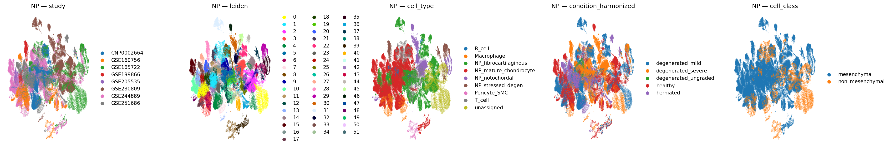
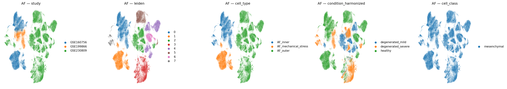
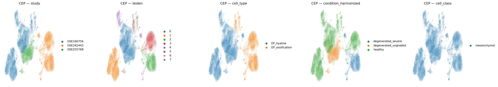
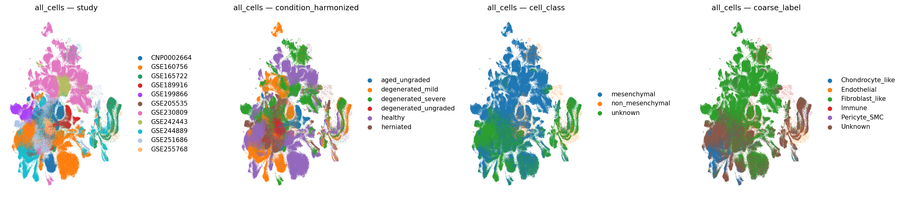

Module 05: Integration, Clustering, and De Novo Annotation
Generated: 2026-03-10 04:58
NP

Cells: 262,967 | Cell types: 7
AF

Cells: 84,624 | Cell types: 4
CEP

Cells: 50,858 | Cell types: 7
all_cells (secondary)

Cells: 410,759 | Cell types: 13
Validation
- PASS: NP output exists
- PASS: NP unassigned = 6.9% (< 10%)
- PASS: NP has 47 clusters (no blob)
- PASS: NP study-cluster ARI = 0.000 (< 1.0)
- PASS: AF output exists
- PASS: AF unassigned = 0.0% (< 10%)
- PASS: AF has 9 clusters (no blob)
- PASS: AF study-cluster ARI = 0.000 (< 1.0)
- PASS: CEP output exists
- PASS: CEP unassigned = 0.0% (< 10%)
- PASS: CEP has 10 clusters (no blob)
- PASS: CEP study-cluster ARI = 0.000 (< 1.0)
- PASS: all_cells output exists
- PASS: all_cells unassigned = 0.0% (< 10%)
- PASS: inclusion_summary.tsv exists
- PASS: study_caveats.tsv exists
- PASS: Integration report exists
Human Checkpoint Questions
- Does the clustering resolution capture biologically meaningful groups without over-splitting?
- Do the cell type annotations make biological sense?
- Are any clusters clearly batch-driven rather than biology-driven?
- For the mesenchymal continuum: are discrete labels appropriate, or should some clusters be merged?
- Are there unexpected cell types or missing expected types?
- Is the all-cells object consistent with the compartment-specific objects?
- Are the study caveats adequately documented?
- Should any annotations be revised before proceeding to differential analysis?